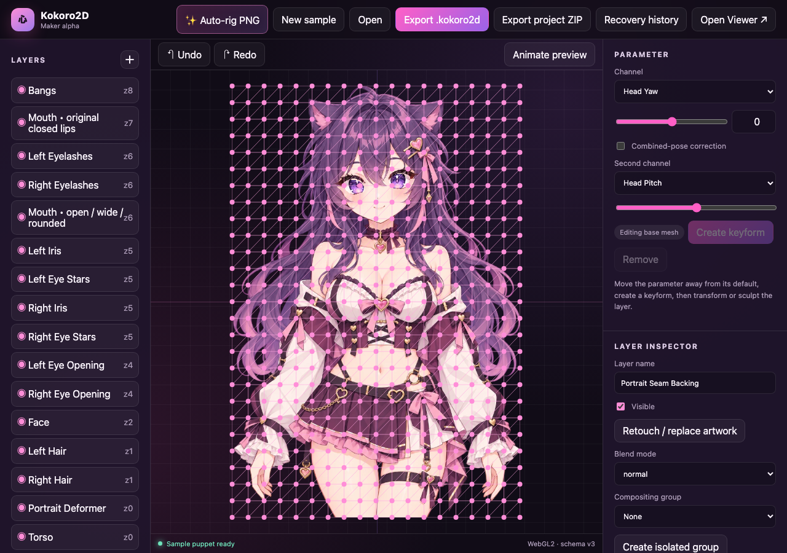

Your drawing, your starting point.
Import a PNG for auto-rigging, bring separated layers, or open an OpenRaster file.
From a single drawing to a character that blinks, talks, and follows your lead. Meet your new browser-native VTuber studio.
Move your cursor around her stage. She’s paying attention.
Less setup between your idea and its first blink. Build in the Maker. Perform in the Viewer. Keep your character in a portable project.

Import a PNG for auto-rigging, bring separated layers, or open an OpenRaster file.
Review the face outlines. Edit meshes, keyforms, layer groups, clipping, and pose corrections.
Switch to the Viewer for procedural motion, expressions, microphone lip sync, and recording.
A purpose-built renderer and an expressive rigging toolkit. Every little triangle has a job to do.
Auto-rig a full character, or choose “Blink and talking only” for a simpler portrait. Review the outlines before you build.
Breathing, blinks, glances, head turns, and spring-driven hair. Choose calm or energetic, then tune the performance.
Microphone lip sync, text-driven mouth shapes, and timed visemes on an audio playback clock. Speech has more than one shape.
Independent winks, squints, brow and jaw channels, plus expression buttons and hotkeys. Blend feelings into the performance.
Browser-native WebGL2, parent cages, nested clipping masks, isolated groups, and normal, multiply, screen, and overlay blending.
A transparent OBS view, adjustable framing, and WebM recording. Save portable projects, with local revision recovery along the way.
Connect an external AI agent through the opt-in local control API. Send a head turn, an expression, speech, or timed visemes—and let the Viewer perform it.
Run the local server for API controls and optional repair helpers. Core rigging and performance work here in your browser.
// Send to your local /api/control
{
"type": "parameters",
"values": {
"head.yaw": 0.4,
"eyes.blinkLeft": 1
},
"holdMs": 500
}Start with Kokoro-chan. Then bring a character that’s all your own.
Use Node.js 20+ and Python 3, then run these commands:
git clone https://github.com/ethand91/Kokoro2D.git
cd Kokoro2D
git switch feature/project-heartbeat-phase1
npm startOpen http://127.0.0.1:5173. The source is public. The local server enables API controls and optional helpers.